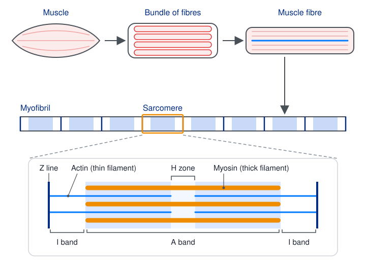
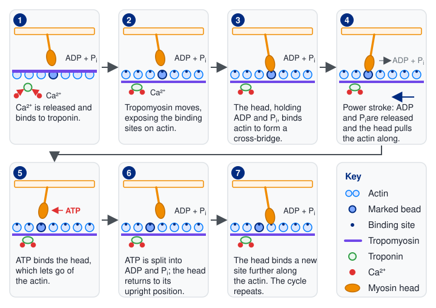
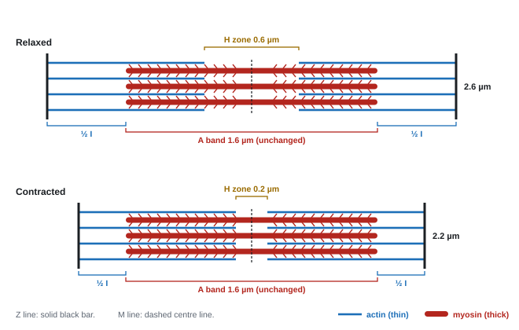
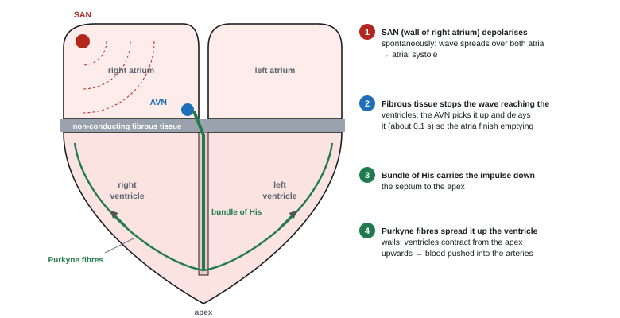

Muscles and the Heart
Movement depends on muscles pulling on bones through tendons, and muscle contraction depends on actin and myosin sliding past each other. The heart is a muscle too, but it contracts on its own rhythm. This page covers the skeleton and muscle structure, the sliding filament mechanism, fibre types, and how the heart's electrical activity produces the heartbeat and an ECG.
Spec7.9Muscles, tendons, ligaments and the skeleton
Know how muscles, tendons, the skeleton and ligaments interact to produce movement, including antagonistic muscle pairs, extensors and flexors.
The parts
| Structure | Joins | Properties | Job |
|---|---|---|---|
| Bone | – | rigid and strong (collagen + calcium phosphate) | lever; support; attachment for muscles |
| Tendon | muscle to bone | strong, inelastic (mostly collagen) | transmits the pull of the muscle to the bone without losing force |
| Ligament | bone to bone | strong, slightly elastic (collagen + more elastic fibres) | holds the bones of a joint together, keeps it stable, allows some movement |
| Cartilage | covers the ends of bones | smooth, tough, flexible | reduces friction, absorbs shock |
| Synovial fluid | fills the joint cavity | – | lubricates the joint |
Antagonistic pairs
- Muscles can only pull (contract). They can't push. So each movable joint needs two muscles that pull in opposite directions: an antagonistic pair.
- A flexor bends (flexes) a joint. An extensor straightens (extends) it.
- When one contracts, its antagonist relaxes and is stretched back to its original length by the contracting muscle.
- Elbow: biceps = flexor; triceps = extensor. Knee: hamstrings = flexors; quadriceps = extensors.
- To hold a joint steady at a fixed angle, both muscles contract with equal force, and ligaments hold the bones in place.
Worked example: describe how the arm is straightened (2 marks)
The triceps (extensor) contracts and pulls on the lower arm bone (ulna) through its tendon.
The biceps (flexor) relaxes and is stretched. The arm straightens at the elbow.
- Ligament: "joins bone to bone", "maintains joint stability". Tendon: "joins muscle to bone", "transmits force".
- "Flexor and extensor muscles are antagonistic"; "one contracts while the other relaxes". The words "joint" and "straightening" from the stem are ignored.
- Name both muscles of the pair: naming only one scored 0 (WBI15 Jun 2024).
- Composition: both are mostly collagen (strength); ligaments contain more elastic fibres so the joint can stretch a little; tendons stay stiff so force isn't lost.
- Ligament damage needs a stated cause (a twisting injury, overextension, a tackle). "Injury" alone gains nothing.
Often asked as: MCQs on tendons and ligaments; label the flexor, extensor and ligament on an elbow diagram; describe how the arm is straightened; how the knee is held steady; tendon and ligament composition and stiffness data.
- Swapping tendons and ligaments, or flexors and extensors (labelling the triceps as a flexor).
- Writing about biceps and triceps when the question is about the knee.
- "The muscle pushes the bone back." Muscles only pull: the antagonist makes the return movement.
- Stopping at "holds bones together" without adding "keeps the joint stable".
Examined in past papers even though the spec doesn't list it.
- Collagen and elastin percentages and stress–strain slopes of tendons and ligaments, e.g. a slope ratio of 11.25 : 1 (WBI15 Oct 2025).
- Tendons get less stiff with age, so less force reaches the bone, contributing to falls in older people (WBI15 Jun 2021 article).
- Skeletal muscle is neurogenic (it contracts only when stimulated by motor neurones), not myogenic (WBI15 Jan 2022).
Spec7.10Skeletal muscle fibres; fast and slow twitch
(i) Know the structure of a mammalian skeletal muscle fibre. (ii) Understand the structural and physiological differences between fast-twitch and slow-twitch muscle fibres.
From muscle to filament
muscle → bundles of muscle fibres (the cells) → each fibre packed with myofibrils → each myofibril is a chain of sarcomeres → made of actin (thin) and myosin (thick) filaments.

The muscle fibre
| Part | What it is | Why it matters |
|---|---|---|
| Multinucleate fibre | one long cell formed when many cells fuse | many nuclei to make proteins along its length; no membranes between sections, so the whole fibre contracts together |
| Sarcolemma | the cell surface membrane | carries the action potential |
| T-tubules (transverse tubules) | infoldings of the sarcolemma running deep into the fibre | carry the action potential into the fibre, close to the sarcoplasmic reticulum |
| Sarcoplasm | the cytoplasm | contains glycogen and myoglobin |
| Sarcoplasmic reticulum (SR) | specialised endoplasmic reticulum wrapped around each myofibril | stores Ca²⁺, releases it when stimulated, pumps it back afterwards |
| Many mitochondria | packed between the myofibrils | ATP for contraction and for pumping Ca²⁺ |
| Myofibrils | bundles of actin and myosin filaments | the contractile units |
The sarcomere and its bands
- A sarcomere is the repeating unit between two Z lines (Z discs).
- A band (dark): the length of the myosin filaments, including where they overlap with actin.
- I band (light): actin only. Each I band spans a Z line, so half of it lies in each neighbouring sarcomere.
- H zone: myosin only, in the middle of the A band.
- M line: the centre of the sarcomere, where the myosin filaments are held together.
- The alternating dark and light bands make skeletal muscle look striated (striped). See the figure in 7.11.
Fast-twitch v slow-twitch fibres
| Slow twitch (type I) | Fast twitch (type II) | |
|---|---|---|
| Contraction | slower, less powerful, sustained | faster, more powerful, short bursts |
| Fatigue | resistant | fatigue quickly |
| Main ATP source | aerobic respiration | anaerobic respiration and creatine phosphate |
| Mitochondria | many | fewer |
| Myoglobin | lots (dark red) | little (pale) |
| Capillaries | dense network | fewer |
| Glycogen and creatine phosphate | less | more |
| Sarcoplasmic reticulum | less | more (fast Ca²⁺ release) |
| Fibre diameter | smaller (short diffusion distance for O₂) | larger |
| Examples | posture muscles in the back; marathon runners' legs; chicken leg | sprinters' legs; eyelid muscles; chicken breast |
- Myoglobin is a red, oxygen-binding protein in muscle. It has a higher affinity for O₂ than haemoglobin, so it takes O₂ from the blood and stores it, releasing it only when the muscle's O₂ level is very low.
"Explain why a marathon runner needs slow-twitch fibres" needs comparatives ("more mitochondria", "more capillaries") and a link to the athlete: many mitochondria → more aerobic respiration → more ATP over a long time without lactate building up → less fatigue.
Worked example: sarcomere length from an electron micrograph
Three sarcomeres, measured from the first Z line to the fourth, are 66 mm long on a micrograph at × 10 000.
One sarcomere on the image = 66 ÷ 3 = 22 mm = 22 000 µm.
Actual length = image ÷ magnification = 22 000 ÷ 10 000 = 2.2 µm.
Always measure from Z line to Z line, and convert the units before dividing.
- Fibre structure: "single multinucleate cell", "repeating bands / sarcomeres", plus sarcolemma, SR, T-tubules, many mitochondria.
- Fast twitch compared with slow twitch (comparatives essential; converse accepted): "fewer mitochondria", "less myoglobin", "fewer capillaries", "larger diameter", "more sarcoplasmic reticulum", "more glycogen", "more creatine phosphate". "Less blood supply" alone is ignored because it isn't a structure.
- Slow-twitch benefits: "many mitochondria give more aerobic respiration / ATP"; "myoglobin stores oxygen"; "large capillary network supplies O₂ and glucose"; "slow, sustained contraction, so less fatigue".
- Sprinter: "fast speed over a short time"; "fast-twitch fibres contract more quickly"; "rely on anaerobic respiration or creatine phosphate, not on oxygen supply".
- Sarcomere: "the repeating unit between Z lines". Type 2 / IIa / IIb / IIx are accepted for fast twitch.
Often asked as: describe a muscle fibre; compare fast- and slow-twitch fibres; why sprinters or marathon runners have more of one type; the role of myoglobin; sarcomere length, ratios and magnification from an electron micrograph; training and fibre type.
- Slow-twitch fibres have capillaries "to store O₂". Capillaries deliver O₂; myoglobin stores it.
- Listing properties without comparatives, or without linking a feature to what the athlete needs.
- Giving function when the question asks for structure ("fatigue quickly" is not a structure).
- "More mitochondria" the wrong way round (slow twitch has more).
- Putting units on a magnification, or rounding it wrongly (15 500 is not 16 000).
Examined in past papers even though the spec doesn't list it.
- Intermediate (type IIa) fibres: endurance training converts some fast fibres into intermediate fibres; slow fibres don't change; more training gives a bigger switch (WBI15 Jan 2021).
- Creatine phosphate in fast-twitch fibres regenerates ATP quickly by giving its phosphate to ADP (WBI15 Jun 2021 article).
- Sarcopenia (age-related loss of muscle), satellite cells, loss of motor units and percentage-change calculations (WBI15 Jun 2021, Jan 2024 articles).
- Ratio of relaxed to contracted sarcomere length from a micrograph, e.g. 1.8 : 1 (WBI15 Jun 2024).
Spec7.11Sliding filament theory
Understand how skeletal muscle contracts according to the sliding filament theory, including the roles of actin, myosin, troponin, tropomyosin, calcium ions (Ca²⁺), ATP and ATPase.
The proteins
- Myosin (thick filament): long tails with heads that stick out. Each head can bind to actin and has ATPase activity (it hydrolyses ATP).
- Actin (thin filament): has binding sites for myosin heads.
- Tropomyosin: a long, thin protein that winds along the actin filament and covers the myosin-binding sites when the muscle is relaxed.
- Troponin: a protein attached to tropomyosin that can bind Ca²⁺.
Contraction, step by step
- An impulse arrives at the neuromuscular junction. Acetylcholine causes the sarcolemma to depolarise, and the action potential spreads along it and down the T-tubules.
- This makes the sarcoplasmic reticulum release Ca²⁺ into the sarcoplasm.
- Ca²⁺ binds to troponin, which changes shape and pulls tropomyosin away from the binding sites. The myosin-binding sites on actin are exposed.
- A myosin head (already carrying ADP + Pi) binds to a site on actin, forming a cross-bridge.
- The head tilts (the power stroke), releasing ADP + Pi and pulling the actin filament towards the M line (the centre of the sarcomere).
- A new ATP binds to the myosin head. This makes the head detach from actin, breaking the cross-bridge.
- ATPase on the myosin head hydrolyses the ATP to ADP + Pi. The energy released returns the head to its upright ("cocked") position.
- The head binds to a new site further along the actin, and the cycle repeats as long as Ca²⁺ and ATP are present. Thousands of heads cycle out of step, so the pull is smooth.
A nerve impulse reaches the neuromuscular junction, and calcium ions are released from the sarcoplasmic reticulum.
Calcium binds troponin, which moves tropomyosin away from the binding sites on actin.
Without this step, the myosin heads cannot reach actin, so no contraction can start.
The myosin head, already carrying ADP and phosphate from the previous cycle, binds to actin and forms a cross-bridge.
ADP and phosphate are released, and the head swings forwards (the power stroke), pulling the actin filament along.
A fresh ATP molecule binds the head and the bond with actin breaks.
The ATPase splits ATP into ADP and phosphate, and the head returns to its upright position, storing energy.
The energy for the return stroke comes from ATP hydrolysis, so the head can attach again further along the actin.

Relaxation
- When impulses stop, Ca²⁺ is actively transported back into the SR (this uses ATP).
- Troponin loses its Ca²⁺ and tropomyosin moves back to cover the binding sites. No cross-bridges can form, so the muscle relaxes and is pulled back to its full length by its antagonist.
What changes length

| On contraction | |
|---|---|
| Sarcomere (Z line to Z line) | shorter |
| I band | shorter |
| H zone | shorter (may disappear) |
| A band | no change (it is the length of the myosin) |
| Actin and myosin filaments | no change: they slide past each other |
The first interactive diagram at the foot of the page lets you contract a sarcomere yourself.
Worked example: band lengths
In the figure, the myosin filaments are 1.6 µm long and each actin filament reaches 1.0 µm from its Z line.
Relaxed sarcomere, 2.6 µm: I band (two halves) = 2.6 − 1.6 = 1.0 µm; H zone = 2.6 − (2 × 1.0) = 0.6 µm.
Contracted sarcomere, 2.2 µm: I band = 2.2 − 1.6 = 0.6 µm; H zone = 2.2 − 2.0 = 0.2 µm.
A band = 1.6 µm in both. Ratio of relaxed to contracted length = 2.6 ÷ 2.2 = 1.2 : 1 (1 d.p.).
Two jobs for ATP
- Detaching the myosin head from actin (when ATP binds) and re-cocking it (when ATPase hydrolyses ATP).
- Pumping Ca²⁺ back into the SR so the muscle can relax.
- Rigor mortis: after death no ATP is made, so myosin heads can't detach and the muscles lock rigid.
- Creatine phosphate in muscle remakes ATP quickly: creatine phosphate + ADP → creatine + ATP.
- Calcium route: "Ca²⁺ released from the sarcoplasmic reticulum"; "binds to troponin, which changes shape"; "tropomyosin moves"; "exposes (myosin) binding sites on actin"; "myosin head binds, forming a cross-bridge".
- ATP route, in logical order: "ADP and Pi released, myosin head pulls actin towards the centre of the sarcomere"; "ATP binds to the myosin head and breaks the cross-bridge"; "ATP hydrolysed (by ATPase on myosin), providing energy to return the head to its original position"; "head can bind again".
- Say "myosin head", not just "myosin". "The power stroke" is not accepted for the ATP-driven recovery step.
- Less Ca²⁺: less binds to troponin, tropomyosin stays in place, fewer cross-bridges, the muscle stays relaxed or contracts weakly.
- Force against velocity: faster shortening means fewer cross-bridges attached at any moment, so less force ("inversely proportional" or "negative correlation" accepted).
Often asked as: describe the sliding filament theory (4 marks); the role of Ca²⁺, troponin or ATP on its own; which part of the sarcomere shortens; why less Ca²⁺ disrupts contraction; isolated fibres in ATP or glucose solutions.
- Mixing up the power stroke (head tilts, ADP + Pi released) with the recovery stroke (ATP hydrolysed, head returns upright). This was the commonest error in the examiner reports.
- Saying the actin or myosin filaments shorten. They slide; the sarcomere shortens.
- Saying Ca²⁺ binds to tropomyosin, or that tropomyosin "frees the myosin heads". Ca²⁺ binds troponin, and tropomyosin uncovers the binding sites on actin.
- Writing out the whole theory when the question asks only about ATP, or only about troponin.
- "Myoglobin head." It's the myosin head.
Examined in past papers even though the spec doesn't list it.
- Isolated muscle fibres: in an ATP solution they shorten straight away (heads can detach and re-cock); in glucose they shorten less, because ATP must first be made by respiration. The solutions had the same water potential as the cytoplasm so the fibres didn't change length by osmosis (WBI15 Jan 2026).
- Creatine phosphate as a fast ATP regenerator (WBI15 Jun 2021 article).
- T-tubules and the Ca²⁺ release channels of the SR (ryanodine receptors) in an article context (WBI15 Jun 2021).
Spec7.12The myogenic heart, its conduction system and ECGs
(i) Know that cardiac muscle is myogenic. (ii) Understand how the heart's own electrical activity coordinates the heartbeat: the sinoatrial node (SAN), atrioventricular node (AVN), bundle of His and Purkyne fibres. (iii) Understand how electrocardiograms (ECGs) help diagnose abnormal heart rhythms.
Myogenic
- Myogenic: cardiac muscle starts each contraction itself, without nerve impulses. Nerves and hormones only change the rate (7.13).
- Skeletal muscle is neurogenic: it contracts only when a motor neurone stimulates it.
How the heartbeat is coordinated
- The sinoatrial node (SAN), a patch of specialised cardiac muscle in the wall of the right atrium, depolarises spontaneously and regularly. It is the pacemaker.
- A wave of excitation (depolarisation) spreads across both atria, which contract together (atrial systole), pushing blood into the ventricles.
- A layer of non-conducting fibrous tissue between the atria and ventricles stops the wave spreading straight into the ventricles.
- The atrioventricular node (AVN) picks up the wave and delays it by about 0.1 s. This gives the atria time to finish contracting and emptying before the ventricles contract.
- The AVN passes the excitation down the bundle of His, in the septum, to the apex at the bottom of the ventricles.
- Purkyne fibres carry it up through the ventricle walls. The ventricles contract from the apex upwards (ventricular systole), squeezing blood up and out into the aorta and pulmonary artery.
- The muscle repolarises and relaxes (diastole) until the SAN fires again.

The second interactive diagram at the foot of the page follows the pressures and valves on the left side of the heart through one beat.
The ECG
An electrocardiogram records the electrical activity of the heart using electrodes on the skin.
| Feature | What's happening |
|---|---|
| P wave | depolarisation of the atria → atrial systole |
| PR interval | time for the impulse to cross the atria and the AVN delay |
| QRS complex | depolarisation of the ventricles → ventricular systole (the biggest wave: ventricles have the most muscle) |
| T wave | repolarisation of the ventricles → ventricular diastole begins |
| R–R interval | one complete cardiac cycle |
(The atria repolarise during the QRS complex, so this doesn't show as a separate wave.)

Heart rate from an ECG
- Heart rate (beats min⁻¹) = 60 ÷ time for one cycle in seconds, measured from one R peak to the next (or between any two matching points).
- Or count beats: heart rate = number of beats × 60 ÷ time in seconds.
Worked example: heart rate from an ECG
In the figure, R to R = four large squares = 4 × 0.20 = 0.80 s. Heart rate = 60 ÷ 0.80 = 75 beats min⁻¹.
Counting instead: 19 beats in 7.0 s → 19 × 60 ÷ 7 = 162.8 = 163 beats min⁻¹ (WBI15 Jun 2021). Heart rate is a whole number, never a fraction.
From paper speed: at 25 mm s⁻¹, an R–R distance of 20 mm is 20 ÷ 25 = 0.80 s → 75 beats min⁻¹.
If the P-to-P interval is 0.8 s, one beat takes 0.8 s.
Beats per minute = 60 ÷ 0.8 = 75 bpm.
Dividing 60 by the time for one beat converts it to beats per minute.
Abnormal rhythms
| Rhythm | What the ECG shows |
|---|---|
| Tachycardia | fast resting rate (above about 100 beats min⁻¹): R peaks close together |
| Bradycardia | slow resting rate (below about 60 beats min⁻¹): R peaks far apart. Normal in many trained athletes |
| Atrial fibrillation | no clear P waves, an irregular wavy baseline, irregular spacing of QRS complexes |
| Ventricular fibrillation | a chaotic trace with no recognisable P, QRS or T: the ventricles quiver and don't pump (needs a defibrillator) |
| Ectopic beat | an extra, early beat followed by a longer gap |
| Heart block | a long PR interval, or P waves not followed by a QRS complex (the AVN delays or blocks the impulse) |
- Doctors compare a patient's trace with a normal trace: the shape, height and duration of each wave, the intervals between them, the rate and the regularity. ECGs can also show heart muscle damaged by a heart attack (for example a changed S–T segment or T wave).
- Myogenic: contraction "initiated within the muscle itself", "without nervous stimulation".
- Comparing ECGs: a comparison in the same sentence, using the labels P, QRS, T, R: "P wave smaller in A", "R peak sharper", "QRS duration shorter", "T wave larger", "heart rate lower in the normal trace", "shorter T–P gap in the patient". Converse accepted. Unlabelled descriptions gain nothing.
- Heart rate: show the count and the time (19 beats in 7 s → 163 bpm); a whole number.
- Impulse route: SAN → AVN → bundle of His → Purkyne fibres; the "delay at the AVN allows the atria to empty" (ventricles to fill).
- Designing an ECG study: record ECGs before and after the stimulus (or in two matched groups) and compare heart rate or the interval between the same peaks.
Often asked as: define myogenic; label the SAN and AVN; calculate heart rate from an ECG; compare two ECG traces; name the stage of the cycle at T; design an ECG investigation (posture, energy drinks).
- "The ventricles contract from the top (base) downwards." They contract from the apex upwards, so blood is pushed up towards the arteries.
- Saying the cardiovascular centre or a nerve starts each heartbeat. The SAN starts it; nerves only change the rate.
- Describing trace A, then trace B, without comparing them point by point.
- Measuring between different points on each beat, or giving a heart rate as a decimal.
- Not knowing that the T wave marks ventricular repolarisation (the start of ventricular diastole).
Examined in past papers even though the spec doesn't list it.
- Named arrhythmias haven't been required: abnormal rhythm is tested by comparing traces (WBI15 Jun 2021, Jan 2022, Oct 2023, Jan 2026).
- POTS (postural orthostatic tachycardia syndrome): heart rate rises by 30 beats min⁻¹ or more, or above 120, within 10 minutes of standing up (WBI15 Jun 2022 article).
- Other measures of cardiovascular health: blood pressure, CRP in the blood, angiograms (WBI15 Jun 2025 article).
- A slower heart rate on an ECG shown as "fewer waves of depolarisation" per minute (WBI15 Oct 2025).
Quick checks
Which structure sets the rate of the heartbeat?
The SAN starts each beat and sets its rate. The AVN only delays the signal, and the bundle of His and Purkinje fibres carry it to the ventricles. Choosing the AVN is the usual mistake, because it is the node that gets the most attention in the pathway.
Why must the myosin head detach from actin during the cycle?
Detachment needs a fresh ATP. Its hydrolysis then returns the head to its upright position, allowing a new attachment further along actin. Calcium is pumped back by ATP, and the A band does not change length during contraction.
A heart beats at 60 beats per minute with a stroke volume of 80 cm3. What is its cardiac output?
Cardiac output = stroke volume × heart rate = 80 × 60 = 4800 cm3 min-1. Adding the two values (140) confuses the formula with a sum, and 480 comes from a slipped digit. Dividing by 60 gives a per-second figure, not per minute.
On an ECG, which wave corresponds to ventricular depolarisation?
The QRS complex is ventricular depolarisation, which leads to ventricular systole. The P wave is atrial, the T wave is ventricular repolarisation (relaxation), and the PR interval is a time, not a wave.